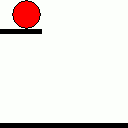

A link to go back to the index
If you would like to contact me, you can call me at: (613)893-3708
Alternatively, you can email me at: Scrimshawdorian@gmail.com
Below are some projects that I have worked on.
To start I would like to note that I have made some songs in the past, these are a mix of personal projects and game development projects:
Galactyc
These next few were made in game development so they don't have names
This next on is a personal edit of the previous one
This was used as menu music
Secondly, links to github depositories of some of my more recent projects:
I would like to mention that the first three projects listed below are tutorial projects I did as part of my tuition
Bobblehead Wars: A top-down shooter where you destroy spawning enemies with help from spawning powerups.
Robot Rampage: A first person shooter with three swappable weapons where you destroy enemy robots. Be sure to grab pickups to survive as long as possible!
Super Soy Boy: A copy of Super Meat boy. Manuver your way around the level in order to reach the bowl at the end! Features customized levels
Potion Master: A game similar in concept to "Overcooked!", your task is to brew potions that match the orders at the top of the screen. Don't take too long to match it though, otherwise the order will vanish!
Perspective(Work In Progress): This is my personal project, a VR game focused on use for the Quest 2. You travel through a dark maze where some of the walls can only be seen from a certain part of the screen! Will you get stuck? Or will you make it by changing your Perspective?
Third, screenshots of some other projects I have worked on and may no longer have access to the files for:
 |
 |
|---|---|
 |
 |
 |
 |